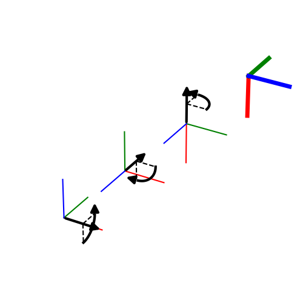

Note
Click here to download the full example code
Euler Angles¶
Any rotation can be represented by three consecutive rotations about three basis vectors. Here we use the extrinsic xyz convention.
import numpy as np
import matplotlib.pyplot as plt
from pytransform3d import rotations as pr
from pytransform3d.plot_utils import remove_frame
alpha, beta, gamma = 0.5 * np.pi, 0.5 * np.pi, 0.5 * np.pi
p = np.array([1, 1, 1])
plt.figure(figsize=(5, 5))
ax = pr.plot_basis(R=np.eye(3), p=-1.5 * p, ax_s=2)
pr.plot_axis_angle(ax, [1, 0, 0, alpha], -1.5 * p)
pr.plot_basis(
ax, pr.active_matrix_from_extrinsic_euler_xyz([alpha, 0, 0]), -0.5 * p)
pr.plot_axis_angle(ax, [0, 1, 0, beta], p=-0.5 * p)
pr.plot_basis(
ax, pr.active_matrix_from_extrinsic_euler_xyz([alpha, beta, 0]), 0.5 * p)
pr.plot_axis_angle(ax, [0, 0, 1, gamma], 0.5 * p)
pr.plot_basis(
ax,
pr.active_matrix_from_extrinsic_euler_xyz([alpha, beta, gamma]), 1.5 * p,
lw=5)
remove_frame(ax)
plt.show()
Total running time of the script: ( 0 minutes 0.043 seconds)